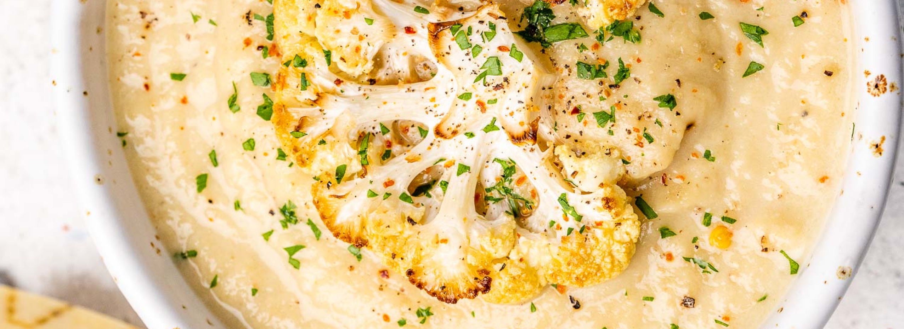

Cauliflower
Soup

This simple cauliflower soup is made with just five ingredients, including salt! It's a quick and easy weeknight meal that's easy to dress up or down. Dinner is served!
Kosher salt
1 head cauliflower, cut into florets
1 quart water
2 tablespoons unsalted butter (more if the cauliflower is extra large)
Extra virgin olive oil
Chopped chives
Bring 1 quart of water to a rolling boil in a medium-sized pot. Add 2 teaspoons of salt to the water.
Working in batches, fill a blender half-way with cooked cauliflower, add enough cooking water to the blender bowl so that it comes up a quarter of the way. Purée until smooth. You want the consistency to be that of soup, so if you need to add more water, do so.
For each blender batch, add salt and butter to taste (about 1/2 teaspoon of salt, and about a tablespoon or more of butter for each blender batch). Since you are using only lightly salted cooking water for a base, not stock, you will need to salt this more than you would otherwise.
Serve immediately into bowls. Drizzle olive oil over the top and sprinkle with chopped chives.